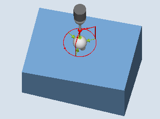

This measuring variant can be used to measure a sphere. Measuring can be parallel to the axis or on a circular path in the workpiece coordinate system.
The center point (position of the sphere) for a known diameter is determined from three or four measuring points at the circumference and one measuring point at the "north pole" of the sphere. With the selection "Determine sphere diameter" and "No repeat measurement", using an additional measurement, the sphere diameter is correctly determined.
If "Determine sphere diameter" and "With repeat measurement" are selected, the additional measurement is performed in the 1st pass only.
In the 2nd pass (repeat pass), the diameter is calculated internally without an additional measurement.
Measuring cycle CYCLE997 can measure the sphere and, in addition, automatically correct a work offset (WO) in the translational offsets of the three axes of the active plane on the basis of the position of the sphere center.
The following description refers to the machining plane G17:
Axes of the plane: XY
Tool axis: Z
Beginning at the starting position, the setpoint of the sphere equator is approached initially in -X and then in -Z. Three or four points are measured at this measuring height.
| Measure: Sphere (CYCLE997), |  Measure: Sphere (CYCLE997), |
Measuring variant "Paraxial positioning":
When positioning between measuring points (e.g. P1-> P2, P2->P3), the axis always retracts to the starting position (at the north pole of the sphere).
The angular position when measuring measuring point P1 is defined using the probe angle α0 (starting angle)
Measuring variant "Positioning on a circular path":
Positioning between measuring points (e.g. P1-> P2, P2->P3) is realized on a circular path at the same height as the equator of the sphere.
With probe angle α0 (starting angle), the angular position when the measuring point P1 is defined; with α1 the incremental angle to P2 and further to P3 – and for the measuring variant with four measuring points, to P4.
The number of measuring points multiplied with the stepping angle α1 must not exceed 360 degrees.
Internally, the actual center point of circle XY is determined from these measured values (sphere center in the plane). Then with +Z and in XY, the axis traverses to the calculated "north pole" of the sphere. A measurement is made there in -Z.
The complete center point of the sphere is calculated in the three axes of the plane (XYZ) from the measuring points.
In the case of a repeat measurement, the axis traverses to the precise equator of the sphere (from the 1st measurement); this improves the measurement result.
If the actual sphere diameter is also to be measured in addition to the sphere center point, the cycle performs a supplementary measurement parallel to the axis at the equator in the +X direction in the 1st measuring pass.
If "Repeat measurement" is selected, an additional measurement is not performed in the 2nd pass (repeat pass) and the diameter is calculated internally.
The "Positioning on a circular path" measuring variant should be preferably used, because this permits optimum positioning behavior. In addition, with this measuring variant, when circling around the sphere, the probe can be aligned in the switching direction (see the "align probe" parameter).
The set-actual differences of the center point coordinates are calculated in the translatory part of the WO. During the correction, the determined sphere center point includes the specified position setpoint (workpiece coordinates, three axes) in the corrected WO.
The probe must be called as a tool with tool length compensation and be active.
Tool type of the probe:
3D multi probe (type 710)
Mono probe (type 712)
The sphere diameter which is to be measured must be much greater than the probe sphere diameter (approx. 10:1).
| Note |
A SPOS-capable spindle is needed for the function "Align 3D probe", or for probe type 712. |
| Note |
For measurement of reference spheres, the diameter of the reference sphere is only reflected exactly in the measurement results if the mechanical complexity of all the axis positions is considered. This can be achieved by performing the calibration in accordance with the following measurement situation. This can be applied to all sphere measurements. |
The probe must be positioned above the set sphere center point at a safe height.
The measuring cycle generates the traversing motion for approaching the measuring points itself and performs the measurements depending on the measuring variant selected.
| Note |
The sphere to be measured must be mounted in such a way that when positioning the probe, the probe ball can safely reach the equator of the measuring object in the WCS and no collision with the sphere clamping occurs. By specifying a variable starting and incremental angle, when positioning on a circular path, this is also possible under difficult clamping conditions. The measurement path in parameter DFA should be selected so large that all measuring points can be reached within total measurement path 2 x DFA. Otherwise no measurement can be performed or the measurements are incomplete. |
The probe is above the determined sphere center point at a safe height (height at the starting position).
See also:
Measure: Sphere (CYCLE997)